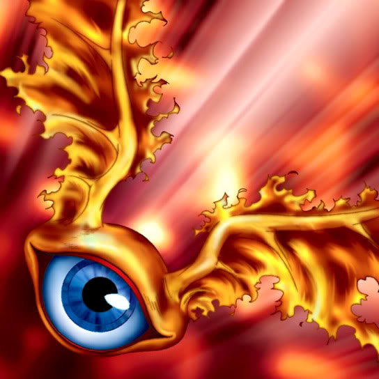

Fire Eye

Description: "Able to move and attack without triggering an opponent's TRAP (LR)."
STATS
ATK: 800
DEF: 600DECK COST
Deck Cost per Card: 19EFFECT NOT IMPLEMENTED
Fusion List (47 Possible Fusions)
- Fire Eye + Ancient Jar = Dissolverock
- Fire Eye + Ansatsu = Flame Swordsman
- Fire Eye + Armaill = Charubin the Fire Knight
- Fire Eye + Armed Ninja = Charubin the Fire Knight
- Fire Eye + Axe Raider = Flame Swordsman
- Fire Eye + Beautiful Headhuntress = Flame Swordsman
- Fire Eye + Blue-Winged Crown = Crimson Sunbird
- Fire Eye + Crow Goblin = Crimson Sunbird
- Fire Eye + Dimensional Warrior = Flame Swordsman
- Fire Eye + Droll Bird = Mavelus
- Fire Eye + Faith Bird = Crimson Sunbird
- Fire Eye + Fiend Reflection #1 = Crimson Sunbird
- Fire Eye + Fire Reaper = Flame Ghost
- Fire Eye + Flame Swordsman = Vermillion Sparrow
- Fire Eye + Flower Wolf = Flame Cerebrus
- Fire Eye + Hard Armor = Charubin the Fire Knight
- Fire Eye + Hyo = Charubin the Fire Knight
- Fire Eye + Kurama = Mavelus
- Fire Eye + Little Chimera = Flame Cerebrus
- Fire Eye + M-Warrior #2 = Charubin the Fire Knight
- Fire Eye + Masaki the Legendary Swordsman = Flame Swordsman
- Fire Eye + Masked Clown = Charubin the Fire Knight
- Fire Eye + Mavelus = Crimson Sunbird
- Fire Eye + Mech Mole Zombie = Flame Ghost
- Fire Eye + Milus Radiant = Flame Cerebrus
- Fire Eye + Moon Envoy = Flame Swordsman
- Fire Eye + Muka Muka = Dissolverock
- Fire Eye + Mystic Horseman = Flame Cerebrus
- Fire Eye + Mystical Sheep #1 = Flame Cerebrus
- Fire Eye + Oscillo Hero = Flame Swordsman
- Fire Eye + Peacock = Crimson Sunbird
- Fire Eye + Pot the Trick = Dissolverock
- Fire Eye + Princess of Tsurugi = Charubin the Fire Knight
- Fire Eye + Prisman = Dissolverock
- Fire Eye + Shadow Specter = Flame Ghost
- Fire Eye + Silver Fang = Flame Cerebrus
- Fire Eye + Skull Red Bird = Crimson Sunbird
- Fire Eye + Skull Servant = Flame Ghost
- Fire Eye + Sleeping Lion = Flame Cerebrus
- Fire Eye + Supporter in the Shadows = Charubin the Fire Knight
- Fire Eye + Swordsman from a Foreign Land = Charubin the Fire Knight
- Fire Eye + Synchar = Flame Cerebrus
- Fire Eye + The Little Swordsman of Aile = Charubin the Fire Knight
- Fire Eye + The Wandering Doomed = Flame Ghost
- Fire Eye + Trap Master = Charubin the Fire Knight
- Fire Eye + Vishwar Randi = Charubin the Fire Knight
- Fire Eye + Wolf = Flame Cerebrus